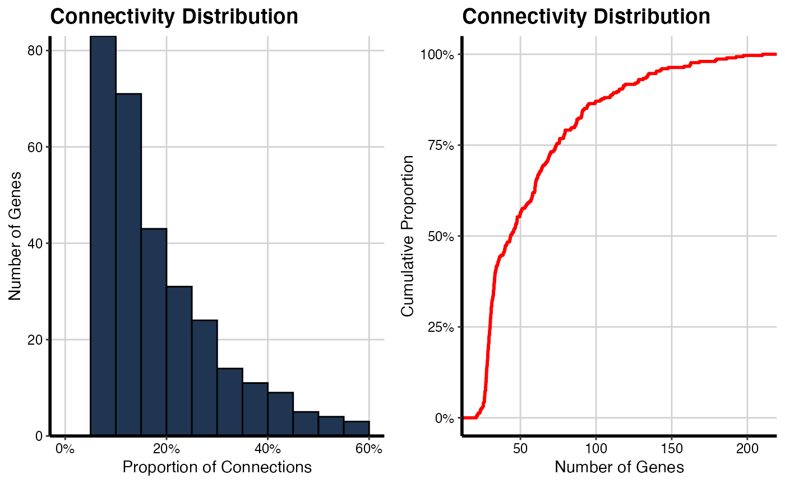
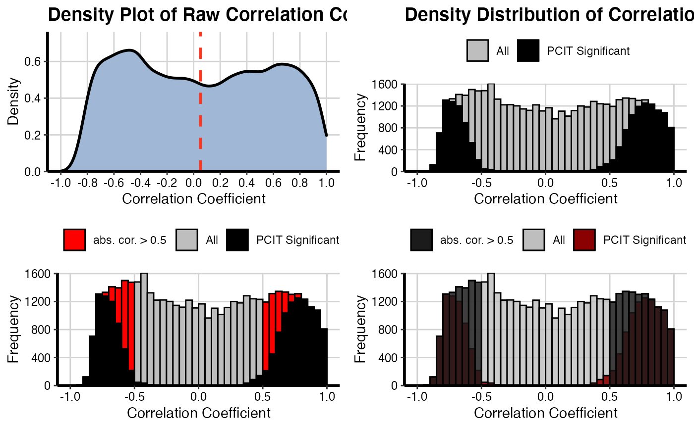
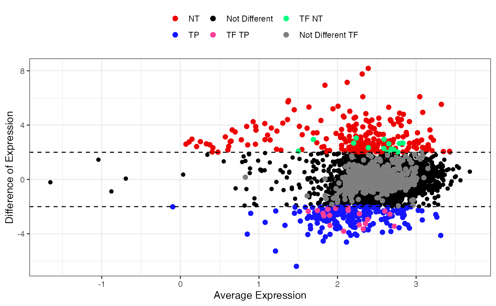
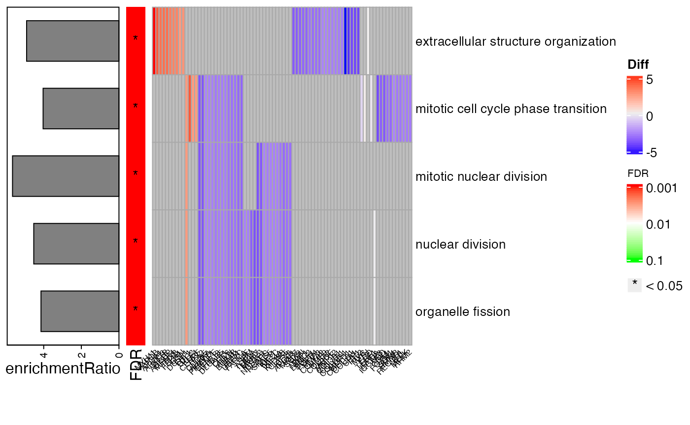
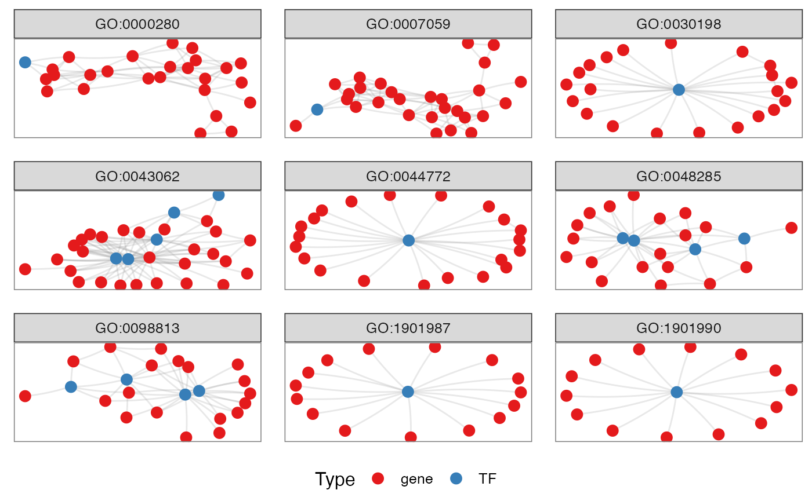
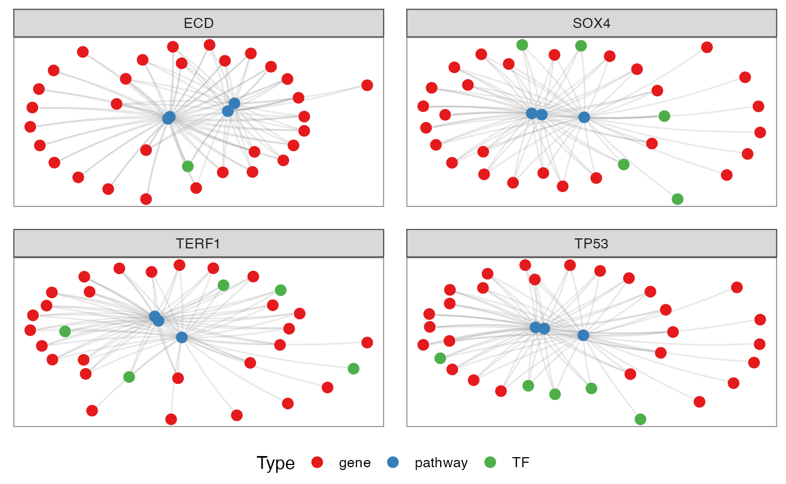
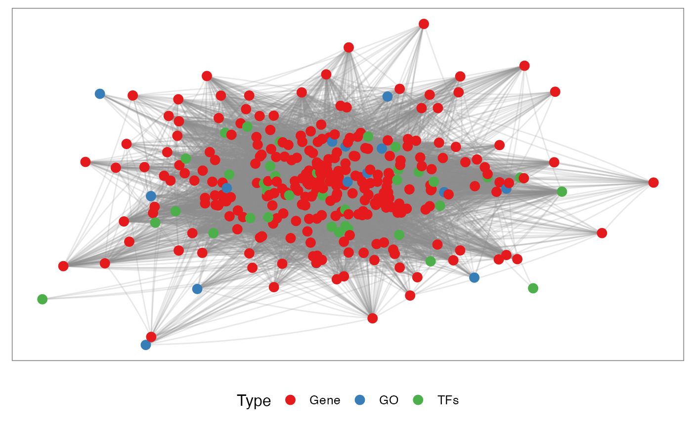

TCGA-STAD.RmdThe first step is to load the necessary packages:
library(CeTF)
## Registered S3 method overwritten by 'GGally':
## method from
## +.gg ggplot2## ## ========================================
## CeTF version 1.0.7
## Bioconductor page: http://bioconductor.org/packages/CeTF/
## Github page: https://github.com/cbiagii/CeTF or https://cbiagii.github.io/CeTF/
## Documentation: http://bioconductor.org/packages/CeTF/
## If you use it in published research, please cite:
##
## Carlos Alberto Oliveira de Biagi Junior, Ricardo Perecin Nociti, Breno Osvaldo
## Funicheli, Patricia de Cassia Ruy, Joao Paulo Bianchi Ximenez, Wilson A Silva Jr.
## CeTF: an R package to Coexpression for Transcription Factors using Regulatory
## Impact Factors (RIF) and Partial Correlation and Information (PCIT) analysis.
## bioRxiv. 2020, DOI: 10.1101/2020.03.30.015784
## ========================================## clusterProfiler v3.16.0 For help: https://guangchuangyu.github.io/software/clusterProfiler
##
## If you use clusterProfiler in published research, please cite:
## Guangchuang Yu, Li-Gen Wang, Yanyan Han, Qing-Yu He. clusterProfiler: an R package for comparing biological themes among gene clusters. OMICS: A Journal of Integrative Biology. 2012, 16(5):284-287.##
## Attaching package: 'clusterProfiler'## The following object is masked from 'package:stats':
##
## filterThen we will load the count table for the Stomach adenocarcinoma (TCGA-STAD) data. This data has 35 normal tissue samples (NT) and 415 primary tumor samples (TP).
load("TCGA-STAD_Counts_hg19.rda") counts <- round(exp.matrix) samplesNT <- TCGAquery_SampleTypes(colnames(counts), "NT") samplesTP <- TCGAquery_SampleTypes(colnames(counts), "TP") counts <- counts[, c(samplesNT, samplesTP)]
The list of TFs for Homo sapies is provided in CeTF package. Here, we will convert from ENSEMBL to SYMBOL nomenclature.
data(TFs) convert <- bitr(TFs, fromType = "ENSEMBL", toType = "SYMBOL", OrgDb = org.Hs.eg.db::org.Hs.eg.db)
## ## 'select()' returned 1:many mapping between keys and columns## Warning in bitr(TFs, fromType = "ENSEMBL", toType = "SYMBOL", OrgDb =
## org.Hs.eg.db::org.Hs.eg.db): 0.12% of input gene IDs are fail to map...Finally, will be performed the complete analysis for this data
out <- runAnalysis(mat = counts, conditions=c("NT", "TP"), lfc = 2.57, padj = 0.05, TFs = convert$SYMBOL, nSamples1 = length(samplesNT), nSamples2= length(samplesTP), tolType = "mean", diffMethod = "Reverter", data.type = "counts")
Before proceeding to view the results, we will check the data distribution:
It will be generated a histogram for adjacency matrix to show the clustering coefficient distribution for both conditions (NT and TP).
# For NT condition histPlot(OutputData(out, "pcit1", "adj_sig"))
# For TP condition histPlot(OutputData(out, "pcit2", "adj_sig"))

It will be generated a density plot for adjacency matrices using the raw adjacency matrix and significant adjacency matrix resulted from PCIT function for both conditions (NT and TP).
# For NT condition densityPlot(mat1 = OutputData(out, "pcit1", "adj_raw"), mat2 = OutputData(out, "pcit1", "adj_sig"), threshold = 0.5)

# For TP condition densityPlot(mat1 = OutputData(out, "pcit2", "adj_raw"), mat2 = OutputData(out, "pcit2", "adj_sig"), threshold = 0.5)
After checking data distribution, is possible to visualize specific results. The first one is the smear plot, that corresponds to a plot for Differentially Expressed (DE) genes and for specific TF that shows the relationship between log(baseMean) and Difference of Expression or log2FoldChange.
The first option allows the visualization of all DEGs in both conditions.

The package also allows visualization of the interaction networks for both conditions. Remembering that there is the possibility to access the tables of both networks using NetworkData(out, “network1”) or NetworkData(out, “network2”) and use Cytoscape to personalize the view of the networks.
netConditionsPlot(out)
After obtaining the interaction networks, it is possible to perform the functional enrichment of these genes for both conditions. In this example, we will perform enrichment only for the NT condition genes. Remembering that there is the possibility of performing a grouping of genes, better known as group GO, where only the genes that form part of the pathways will be counted, with no statistical inference. The getGroupGO function is used for this:
# Loading Homo sapiens annotation package library(org.Hs.eg.db)
## Loading required package: AnnotationDbi## Loading required package: stats4## Loading required package: BiocGenerics## Loading required package: parallel##
## Attaching package: 'BiocGenerics'## The following objects are masked from 'package:parallel':
##
## clusterApply, clusterApplyLB, clusterCall, clusterEvalQ,
## clusterExport, clusterMap, parApply, parCapply, parLapply,
## parLapplyLB, parRapply, parSapply, parSapplyLB## The following objects are masked from 'package:stats':
##
## IQR, mad, sd, var, xtabs## The following objects are masked from 'package:base':
##
## anyDuplicated, append, as.data.frame, basename, cbind, colnames,
## dirname, do.call, duplicated, eval, evalq, Filter, Find, get, grep,
## grepl, intersect, is.unsorted, lapply, Map, mapply, match, mget,
## order, paste, pmax, pmax.int, pmin, pmin.int, Position, rank,
## rbind, Reduce, rownames, sapply, setdiff, sort, table, tapply,
## union, unique, unsplit, which, which.max, which.min## Loading required package: Biobase## Welcome to Bioconductor
##
## Vignettes contain introductory material; view with
## 'browseVignettes()'. To cite Bioconductor, see
## 'citation("Biobase")', and for packages 'citation("pkgname")'.## Loading required package: IRanges## Loading required package: S4Vectors##
## Attaching package: 'S4Vectors'## The following object is masked from 'package:clusterProfiler':
##
## rename## The following object is masked from 'package:base':
##
## expand.grid##
## Attaching package: 'IRanges'## The following object is masked from 'package:clusterProfiler':
##
## slice##
## Attaching package: 'AnnotationDbi'## The following object is masked from 'package:clusterProfiler':
##
## select# Selecting genes only for the NT condition genes <- unique(c(as.character(NetworkData(out, "network1")[, "gene1"]), as.character(NetworkData(out, "network1")[, "gene2"]))) enrich <- getEnrich(organism='hsapiens', database='geneontology_Biological_Process', genes=genes, GeneType='genesymbol', refGene=refGenes$Homo_sapiens$SYMBOL, fdrMethod = 'BH', fdrThr = 0.05, minNum = 5, maxNum = 500)
## Loading the functional categories...
## Loading the ID list...
## Loading the reference list...
## Performing the enrichment analysis...This package provides four different types of visualization for functional enrichment results:
Enables the visualization of the enrichment analysis results from getEnrich function. The plot contains the heatmap with the associated pathways genes, the significance of the enrichment and a barplot with the enrichment ratio.

enrichPlot(res = enrich$results, type = "circle")
enrichPlot(res = enrich$results, type = "bar")
enrichPlot(res = enrich$results, type = "dot")
Generates the plot of groupGO or getEnrch network result of getGroupGO or getEnrich function, and the integrated network of genes, GOs and TFs.
t1 <- head(enrich$results, 15) t2 <- subset(enrich$netGO, enrich$netGO$gene1 %in% as.character(t1[, "ID"])) pt <- netGOTFPlot(netCond = NetworkData(out, "network1"), resultsGO = t1, netGO = t2, anno = NetworkData(out, "annotation"), groupBy = 'pathways', type = 'GO') pt$plot

TFs <- c("ECD", "SOX4", "TERF1", "TP53") pt <- netGOTFPlot(netCond = NetworkData(out, "network1"), resultsGO = t1, netGO = t2, anno = NetworkData(out, "annotation"), groupBy = 'TFs', TFs = TFs, type = 'GO') pt$plot

It is possible to choose for specif genes to visualize how them are related with the enriched pathways and TFs.
genes <- c('CDH1', 'TP53') pt <- netGOTFPlot(netCond = NetworkData(out, "network1"), resultsGO = t1, netGO = t2, anno = NetworkData(out, "annotation"), groupBy = 'genes', genes = genes, type = 'GO') pt$plot
It is also possible to integrate the TFs, genes and Pathways in the same network:
pt <- netGOTFPlot(netCond = NetworkData(out, "network1"), netGO = t2, keyTFs = NetworkData(out, "keytfs"), type = 'Integrated') pt$plot

This plot makes it possible to visualize the targets of specific TFs or genes. The main idea is to identify which chromosomes are linked to the targets of a given gene or TF to infer whether there are cis (same chromosome) or trans (different chromosomes) links between them. The black links are between different chromosomes while the red links are between the same chromosome.
CircosTargets(object = out, file = "/path/to/gtf/file.gtf", nomenclature = "SYMBOL", selection = c("SSRP1", "MAF", "SETD3", "HOXB3"), cond = "condition1")
Network propagation is an important and widely used algorithm in systems biology, with applications in protein function prediction, disease gene prioritization, and patient stratification. Propagation provides a robust estimate of network distance between sets of nodes. Network propagation uses the network of interactions to find new genes that are most relevant to a set of well understood genes. To perform this analysis is necessary to install the latest Cytoscape software version and know the path that will be installed the software. After running the diffusion analysis is possible to perform the enrichment for the subnetwork resulted.
result <- diffusion(object = out, cond = "network1", genes = "HOXB3", cyPath = "/path/to/cytoscape", name = "top_diffusion", label = T) result$plot